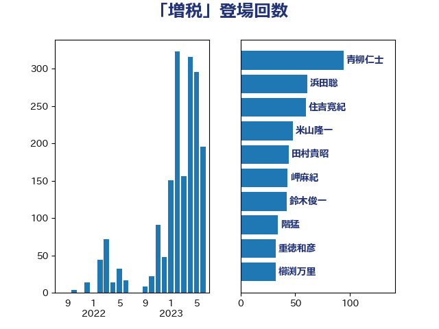

単語「増税」

| 青柳仁士 | 日本維新の会 | 94 回 |
| 浜田聡 | NHK党 | 61 回 |
| 住吉寛紀 | 日本維新の会 | 60 回 |
| 米山隆一 | 立憲民主党 | 48 回 |
| 田村貴昭 | 日本共産党 | 44 回 |
| 岬麻紀 | 日本維新の会 | 43 回 |
| 鈴木俊一 | 自由民主党 | 42 回 |
| 階猛 | 立憲民主党 | 34 回 |
| 重徳和彦 | 立憲民主党 | 32 回 |
| 櫛渕万里 | れいわ新選組 | 32 回 |
| 馬場伸幸 | 日本維新の会 | 30 回 |
| 足立康史 | 日本維新の会 | 30 回 |
| 岸田文雄 | 自由民主党 | 30 回 |
| 神谷宗幣 | 参政党 | 29 回 |
| 泉健太 | 立憲民主党 | 27 回 |
| 梅村聡 | 日本維新の会 | 27 回 |
| 宮本徹 | 日本共産党 | 26 回 |
| おおつき紅葉 | 立憲民主党 | 25 回 |
| 阿部司 | 日本維新の会 | 24 回 |
| 三木圭恵 | 日本維新の会 | 23 回 |
| 落合貴之 | 立憲民主党 | 22 回 |
| 東徹 | 日本維新の会 | 22 回 |
| 福田昭夫 | 立憲民主党 | 21 回 |
| 大西健介 | 立憲民主党 | 21 回 |
| 中司宏 | 日本維新の会 | 19 回 |
| 藤岡隆雄 | 立憲民主党 | 18 回 |
| 斎藤アレックス | 国民民主党 | 18 回 |
| 大塚耕平 | 国民民主党 | 18 回 |
| 横沢高徳 | 立憲民主党 | 17 回 |
| 柴愼一 | 立憲民主党 | 17 回 |
| 山井和則 | 立憲民主党 | 17 回 |
| たがや亮 | れいわ新選組 | 17 回 |
| 玉木雄一郎 | 国民民主党 | 16 回 |
| 柴田巧 | 日本維新の会 | 16 回 |
| 和田有一朗 | 日本維新の会 | 16 回 |
| 藤田文武 | 日本維新の会 | 15 回 |
| 漆間譲司 | 日本維新の会 | 15 回 |
| 櫻井周 | 立憲民主党 | 15 回 |
| 小西洋之 | 立憲民主党 | 15 回 |
| 小池晃 | 日本共産党 | 15 回 |
| 堂込麻紀子 | 無所属 | 15 回 |
| 野間健 | 立憲民主党 | 14 回 |
| 山添拓 | 日本共産党 | 14 回 |
| 音喜多駿 | 日本維新の会 | 13 回 |
| 沢田良 | 日本維新の会 | 13 回 |
| 野田佳彦 | 立憲民主党 | 12 回 |
| 稲富修二 | 立憲民主党 | 12 回 |
| 柚木道義 | 立憲民主党 | 12 回 |
| 掘井健智 | 日本維新の会 | 12 回 |
| 井上英孝 | 日本維新の会 | 12 回 |
| 井上哲士 | 日本共産党 | 12 回 |
| 田島麻衣子 | 立憲民主党 | 11 回 |
| 渡辺周 | 立憲民主党 | 11 回 |
| 浜口誠 | 国民民主党 | 11 回 |
| 浅田均 | 日本維新の会 | 11 回 |
| 赤嶺政賢 | 日本共産党 | 10 回 |
| 末松義規 | 立憲民主党 | 10 回 |
| 道下大樹 | 立憲民主党 | 9 回 |
| 奥下剛光 | 日本維新の会 | 9 回 |
| 伊波洋一 | 無所属 | 9 回 |
| 福山哲郎 | 立憲民主党 | 8 回 |
| 浅川義治 | 日本維新の会 | 8 回 |
| 岩谷良平 | 日本維新の会 | 8 回 |
| 田村智子 | 日本共産党 | 7 回 |
| 柳ヶ瀬裕文 | 日本維新の会 | 7 回 |
| 村田享子 | 立憲民主党 | 7 回 |
| 岩渕友 | 日本共産党 | 7 回 |
| 前原誠司 | 国民民主党 | 7 回 |
| 高良鉄美 | 無所属 | 6 回 |
| 芳賀道也 | 国民民主党 | 6 回 |
| 本庄知史 | 立憲民主党 | 6 回 |
| 早稲田ゆき | 立憲民主党 | 6 回 |
| 今枝宗一郎 | 自由民主党 | 6 回 |
| 串田誠一 | 日本維新の会 | 6 回 |
| 金子道仁 | 日本維新の会 | 5 回 |
| 辻元清美 | 立憲民主党 | 5 回 |
| 西田昌司 | 自由民主党 | 5 回 |
| 福島伸享 | 無所属 | 5 回 |
| 梅村みずほ | 日本維新の会 | 5 回 |
| 志位和夫 | 日本共産党 | 5 回 |
| 山本太郎 | れいわ新選組 | 5 回 |
| 堀場幸子 | 日本維新の会 | 5 回 |
| 勝部賢志 | 立憲民主党 | 5 回 |
| 佐藤正久 | 自由民主党 | 5 回 |
| 上田清司 | 国民民主党 | 5 回 |
| 高橋千鶴子 | 日本共産党 | 4 回 |
| 馬淵澄夫 | 立憲民主党 | 4 回 |
| 美延映夫 | 日本維新の会 | 4 回 |
| 篠原豪 | 立憲民主党 | 4 回 |
| 礒崎哲史 | 国民民主党 | 4 回 |
| 石垣のりこ | 立憲民主党 | 4 回 |
| 浜田靖一 | 自由民主党 | 4 回 |
| 浅野哲 | 国民民主党 | 4 回 |
| 杉本和巳 | 日本維新の会 | 4 回 |
| 後藤祐一 | 立憲民主党 | 4 回 |
| 山本剛正 | 日本維新の会 | 4 回 |
| 原口一博 | 立憲民主党 | 4 回 |
| 高橋英明 | 日本維新の会 | 3 回 |
| 高木啓 | 自由民主党 | 3 回 |
| 高木かおり | 日本維新の会 | 3 回 |
| 赤澤亮正 | 自由民主党 | 3 回 |
| 西村康稔 | 自由民主党 | 3 回 |
| 西岡秀子 | 国民民主党 | 3 回 |
| 藤巻健太 | 日本維新の会 | 3 回 |
| 舟山康江 | 国民民主党 | 3 回 |
| 紙智子 | 日本共産党 | 3 回 |
| 福島みずほ | 社会民主党 | 3 回 |
| 石井苗子 | 日本維新の会 | 3 回 |
| 矢倉克夫 | 公明党 | 3 回 |
| 猪瀬直樹 | 日本維新の会 | 3 回 |
| 片山大介 | 日本維新の会 | 3 回 |
| 池畑浩太朗 | 日本維新の会 | 3 回 |
| 早坂敦 | 日本維新の会 | 3 回 |
| 市村浩一郎 | 日本維新の会 | 3 回 |
| 倉林明子 | 日本共産党 | 3 回 |
| 伊藤孝恵 | 国民民主党 | 3 回 |
| 三上えり | 立憲民主党 | 3 回 |
| 一谷勇一郎 | 日本維新の会 | 3 回 |
| 馬場雄基 | 立憲民主党 | 2 回 |
| 赤木正幸 | 日本維新の会 | 2 回 |
| 西田実仁 | 公明党 | 2 回 |
| 藤井比早之 | 自由民主党 | 2 回 |
| 萩生田光一 | 自由民主党 | 2 回 |
| 舞立昇治 | 自由民主党 | 2 回 |
| 笠井亮 | 日本共産党 | 2 回 |
| 盛山正仁 | 自由民主党 | 2 回 |
| 田嶋要 | 立憲民主党 | 2 回 |
| 田名部匡代 | 立憲民主党 | 2 回 |
| 玄葉光一郎 | 立憲民主党 | 2 回 |
| 熊田裕通 | 自由民主党 | 2 回 |
| 渡辺創 | 立憲民主党 | 2 回 |
| 浦野靖人 | 日本維新の会 | 2 回 |
| 池下卓 | 日本維新の会 | 2 回 |
| 水野素子 | 立憲民主党 | 2 回 |
| 森山浩行 | 立憲民主党 | 2 回 |
| 本村伸子 | 日本共産党 | 2 回 |
| 平沼正二郎 | 自由民主党 | 2 回 |
| 山田美樹 | 自由民主党 | 2 回 |
| 山崎正恭 | 公明党 | 2 回 |
| 小川淳也 | 立憲民主党 | 2 回 |
| 宮本岳志 | 日本共産党 | 2 回 |
| 宮口治子 | 立憲民主党 | 2 回 |
| 大島九州男 | れいわ新選組 | 2 回 |
| 嘉田由紀子 | 無所属 | 2 回 |
| 吉田とも代 | 日本維新の会 | 2 回 |
| 古川俊治 | 自由民主党 | 2 回 |
| 伊藤岳 | 日本共産党 | 2 回 |
| 仁比聡平 | 日本共産党 | 2 回 |
| 中谷一馬 | 立憲民主党 | 2 回 |
| 高村正大 | 自由民主党 | 1 回 |
| 高木真理 | 立憲民主党 | 1 回 |
| 青木愛 | 立憲民主党 | 1 回 |
| 青島健太 | 日本維新の会 | 1 回 |
| 青山繁晴 | 自由民主党 | 1 回 |
| 金村龍那 | 日本維新の会 | 1 回 |
| 金子俊平 | 自由民主党 | 1 回 |
| 遠藤良太 | 日本維新の会 | 1 回 |
| 遠藤敬 | 日本維新の会 | 1 回 |
| 輿水恵一 | 公明党 | 1 回 |
| 羽田次郎 | 立憲民主党 | 1 回 |
| 稲津久 | 公明党 | 1 回 |
| 石川香織 | 立憲民主党 | 1 回 |
| 石井拓 | 自由民主党 | 1 回 |
| 田村まみ | 国民民主党 | 1 回 |
| 熊谷裕人 | 立憲民主党 | 1 回 |
| 滝波宏文 | 自由民主党 | 1 回 |
| 源馬謙太郎 | 立憲民主党 | 1 回 |
| 清水貴之 | 日本維新の会 | 1 回 |
| 浜野喜史 | 国民民主党 | 1 回 |
| 江田憲司 | 立憲民主党 | 1 回 |
| 松野明美 | 日本維新の会 | 1 回 |
| 松沢成文 | 日本維新の会 | 1 回 |
| 松川るい | 自由民主党 | 1 回 |
| 杉田水脈 | 自由民主党 | 1 回 |
| 新垣邦男 | 立憲民主党 | 1 回 |
| 後藤茂之 | 自由民主党 | 1 回 |
| 岸真紀子 | 立憲民主党 | 1 回 |
| 山田勝彦 | 立憲民主党 | 1 回 |
| 小野泰輔 | 日本維新の会 | 1 回 |
| 小田原潔 | 自由民主党 | 1 回 |
| 小沢雅仁 | 立憲民主党 | 1 回 |
| 小宮山泰子 | 立憲民主党 | 1 回 |
| 宗清皇一 | 自由民主党 | 1 回 |
| 守島正 | 日本維新の会 | 1 回 |
| 奥野総一郎 | 立憲民主党 | 1 回 |
| 堤かなめ | 立憲民主党 | 1 回 |
| 城井崇 | 立憲民主党 | 1 回 |
| 吉良州司 | 無所属 | 1 回 |
| 吉田はるみ | 立憲民主党 | 1 回 |
| 古賀友一郎 | 自由民主党 | 1 回 |
| 務台俊介 | 自由民主党 | 1 回 |
| 加藤勝信 | 自由民主党 | 1 回 |
| 伊東信久 | 日本維新の会 | 1 回 |
| 仁木博文 | 無所属 | 1 回 |
| 井原巧 | 自由民主党 | 1 回 |
| 井上貴博 | 自由民主党 | 1 回 |
| 中川正春 | 立憲民主党 | 1 回 |